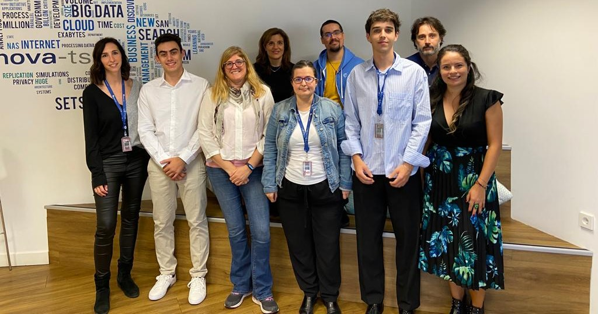

Equipo de la cátedra Innova-tsn UPM

Javier Sánchez Tirados
Alumno de la Universidad Politécnica de Madrid y becario de la Cátedra INNOVA-tsn UPM.

Miguel Hernando Padilla
Alumno de la Universidad Politécnica de Madrid y becario de la Cátedra INNOVA-tsn UPM.
Ana Maria Niño
Coordinadora de la Cátedra INNOVA-tsn UPM por parte de Innova-tsn.

Begoña Vega
Head of AI Models & Applications AI Solutions & Strategy en Innova-tsn.
Jose Ignacio Vernaldo
UK Country Manager & Global Head of AI en Innova-tsn.
Mencía Vega
Talento y Cultura en Innova-tsn.
Rosario Guerra
Directora de la Cátedra INNOVA-tsn UPM por parte de Innova-tsn.
Nuria Estebas
Marketing & Communication Manager en Innova-tsn.
Jaime Ramírez
Salud, eLearning y psicología en la UPM.
Elena Villaba
Directora de la Cátedra INNOVA-tsn UPM por parte de la Universidad Politécnica de Madrid. Human-Computer Interaction/User Experience, personas mayores y salud en la UPM.
Cristian Moral
Human-Computer Interaction/User Experience, Virtual Reality en la UPM.

Angélica de Antonio
Human-Computer Interaction/User Experience, Virtual Reality, eLearning y Psicología en la UPM.
Jose MAría Barambones
Human-Computer Interaction/User Experience, Virtual Reality, Games and AI en la UPM.
Loic Martínez
Human-Computer Interaction/User Experience y accesibilidad en la UPM.
Ricardo Imbert
Human-Computer Interaction/User Experience y agentes en la UPM.